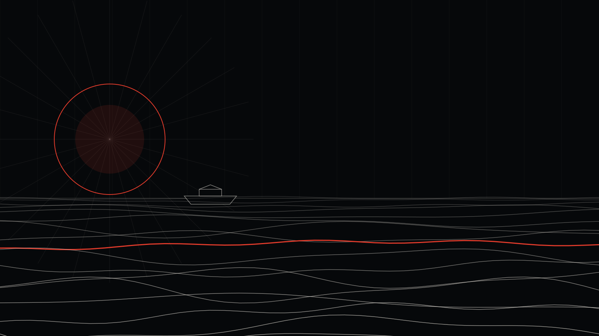

Meta reklamlarında ilk üç saniye: Kreatif mi, hedefleme mi?

Reklam paneli giderek daha otomatik hale geliyor. Bu da reklamverenin elindeki en güçlü kaldıracı tek bir yere taşıyor: kreatife.
Eskiden kampanyaların büyük kısmı ince hedefleme ayarlarıyla kazanılırdı. Bugün sistem doğru kişiyi bulma işini büyük ölçüde kendisi üstleniyor; sizin işiniz, o kişi karşısına çıktığında onu durdurmak.
İlk üç saniyede ne olmalı?
- Ürün ya da fayda ilk karede görünür olmalı.
- Ses kapalı izleyen için ekranda kısa bir metin olmalı.
- Hareket ilk saniyede başlamalı; yavaş açılan logolar kaydırılır.
Test etmeden karar vermeyin
Aynı mesajı üç farklı açılışla hazırlayıp A/B testine sokmak, bütçeyi tek bir tahmine yatırmaktan çok daha verimlidir. Kazanan kreatif belli olduğunda bütçe ona kaydırılır, kaybedenler bir sonraki testin girdisi olur.
Hedefleme artık pusula
Hedefleme hâlâ önemli, ancak artık dümen değil pusula. Dümen, ekranda gördüğünüz ilk karede. Kreatif ve kampanya yönetimini birlikte ele aldığımız Meta reklam yönetimi hizmetimize göz atabilirsiniz.

İsa Tosun
Noah Reklam Ajansı'nın kurucusu. Strateji, tasarım ve dijital pazarlamayı tek bir rotada birleştiriyor.